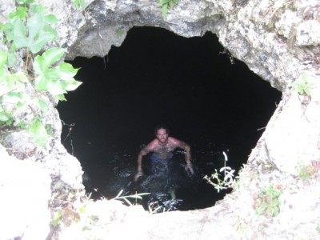
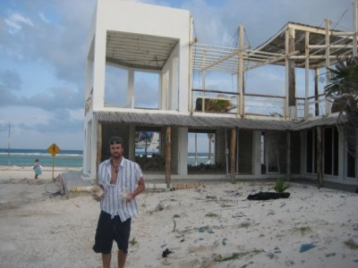

March 18, 2008buenas tardes i will write about the next two days from the comfort of my wooden chair, flanked by my trusty loyal companion, corona, in the beautiful city of san cristobol de las casas. the crashing of the waves awoke us around 730 in the morning and it was damn beautiful outside. the previous night, we sat lookin out to the ocean drinking a few beers and catching up after i hadnt seen hillery in almost 7 months now. in the morning we met two men who had driven their bmw motorcycles from vancouver to the border of southern guatemala and now are heading back to vancouver. physically, they looked like they had been riding every kilometer of it. Unshaven, scars, and skin like leather. in my next email, i will give you their website, its pretty sweet to take a browse through. we hiked along the beach to the ruins of tulum. the ruins are average, but they are given extra stress by guidebooks because of their location. (along the shores and cliffs of the caribbean sea) after hiking around the ruins for a while we set off south down the coast of the yucatan. the first place we stopped was called ´´the temple of doom cenote´´ Cenotes are caves with filled fresh, clear, blue water from the result of a meteor strike on the peninsula a very, very long time ago. i cant describe these things, they are too ´unworldy´ ill post some pictures of it on my website, when these posts make it there. we finally made it to the town of mahahual 200 or so kilometers down the coast. the entire ride to this city took around 2-3 hours, throwing in the time needed to make it through potholes the size of small cars, stray dogs chasing your car, and military checkpoints where you must exit the vehicle and promptly be searched by 8-10 soldiers carrying m-16s. mahahual was an amazing town that had oceanfront restaurants, bars, shops, etc. after hurricane dean 8 months ago, the entire town in wiped out. there is garbage and debris all over and they are rebuilding all of the restaurants, bars, and shops. just devastation, and this is 8 months later, and there were still over-turned boats, trees uprooted, just destroyed.   after getting advice to our next destination, a town called xcalak, we set off. the road was windy, all dirt, filled with potholes and strays. the positive being it hugged the turquoise caribbean sea the entire ride. we had traveled 70 kilometers on this road when we abruptly came to a dead-end. i left the car with hillery and walked into a house that was nearby and maybe the only one within 10 square miles. inmexico, its ok to walk into houses as the chances of finding someone unpleasant is almost zero. i announced myself and the old man inside said to enter. he came out and after a very friendly conversation about where we were coming from, where we were going, he gave me directions back 30 kilometers to a different road that hadn´t been washed away by the ´cane. we seemed dejected by the news, so he gave us other news that he had a pet monkey and offered to feed it in front of us. now who are we to say no to watching a old mexican dude feed his pet monkey? so the trip on this road wasnt totally worthwhile. we finally pulled into xcalak. the southern most town on the yucatan peninsula in mexico. it sits on the border of belize and mexico and is virtually unknown to the average mexican tourist. we probably only saw one other tourist in this town the entire time. i´ll leave you here for tomorrow, we were set to go snorkel and dive the tranquil waters of the country of belize. im reading a book right now called ínto the wild´by jon krakauer. i know its a movie as well, but this book is mind-blowing. for those of us that like to live on the road, (i prefer to call myself an amateur vagabond, or v.i.t. vagabond in training, this book is a must-read) but for all of us that have that deep desire to free yourself from the daily grind, say screw it, im taking off, you must read this book. i relate to this guy a lot, and you´ll know why when you read it. on friday, im taking a 12 hour bus ride through mexico northward to oaxaca city. the last time i was in southern mexico a year ago, i couldnt make it there because of the rioting in oaxaca. now it is peaceful and calling my name. i will be back on the road solo once again, its great not having anyone holding you back, causing drama, and the people i will meet will teach me things about the world you cant learn at home. on the other hand, there have been a few times this trip where something, someone, reminded me of a story back home, but i had no one to share it with. i do wish my friends would travel more because i think theres a lot they are missing, and man could they be having an amazing time with me right now. so for both of us, im sad in that regard, because i party with people of a handful nationalities each night, and id love for all my friends to experience what im experiencing, meet who im meeting, and feel what i feel, because being on the road is where its at. now if youll excuse me, this little mexican boy next to me is playing a sweet little computer fighting game, and i think its my duty to challenge him to a duel. adios amigos.
after getting advice to our next destination, a town called xcalak, we set off. the road was windy, all dirt, filled with potholes and strays. the positive being it hugged the turquoise caribbean sea the entire ride. we had traveled 70 kilometers on this road when we abruptly came to a dead-end. i left the car with hillery and walked into a house that was nearby and maybe the only one within 10 square miles. inmexico, its ok to walk into houses as the chances of finding someone unpleasant is almost zero. i announced myself and the old man inside said to enter. he came out and after a very friendly conversation about where we were coming from, where we were going, he gave me directions back 30 kilometers to a different road that hadn´t been washed away by the ´cane. we seemed dejected by the news, so he gave us other news that he had a pet monkey and offered to feed it in front of us. now who are we to say no to watching a old mexican dude feed his pet monkey? so the trip on this road wasnt totally worthwhile. we finally pulled into xcalak. the southern most town on the yucatan peninsula in mexico. it sits on the border of belize and mexico and is virtually unknown to the average mexican tourist. we probably only saw one other tourist in this town the entire time. i´ll leave you here for tomorrow, we were set to go snorkel and dive the tranquil waters of the country of belize. im reading a book right now called ínto the wild´by jon krakauer. i know its a movie as well, but this book is mind-blowing. for those of us that like to live on the road, (i prefer to call myself an amateur vagabond, or v.i.t. vagabond in training, this book is a must-read) but for all of us that have that deep desire to free yourself from the daily grind, say screw it, im taking off, you must read this book. i relate to this guy a lot, and you´ll know why when you read it. on friday, im taking a 12 hour bus ride through mexico northward to oaxaca city. the last time i was in southern mexico a year ago, i couldnt make it there because of the rioting in oaxaca. now it is peaceful and calling my name. i will be back on the road solo once again, its great not having anyone holding you back, causing drama, and the people i will meet will teach me things about the world you cant learn at home. on the other hand, there have been a few times this trip where something, someone, reminded me of a story back home, but i had no one to share it with. i do wish my friends would travel more because i think theres a lot they are missing, and man could they be having an amazing time with me right now. so for both of us, im sad in that regard, because i party with people of a handful nationalities each night, and id love for all my friends to experience what im experiencing, meet who im meeting, and feel what i feel, because being on the road is where its at. now if youll excuse me, this little mexican boy next to me is playing a sweet little computer fighting game, and i think its my duty to challenge him to a duel. adios amigos.  carlo
carlo

|
You are using an insecure version of your web browser. Please update your browser!
Using an outdated browser makes your computer unsafe. For a safer, faster, more enjoyable user experience, please update your browser today or try a newer browser.
|
{kind=link}
{kind=link}